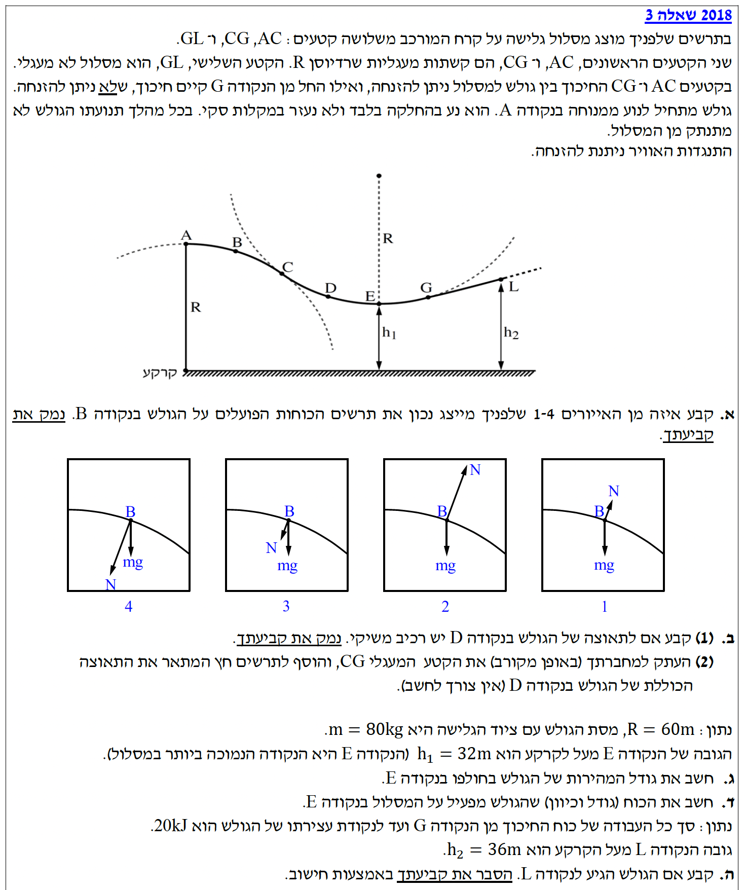
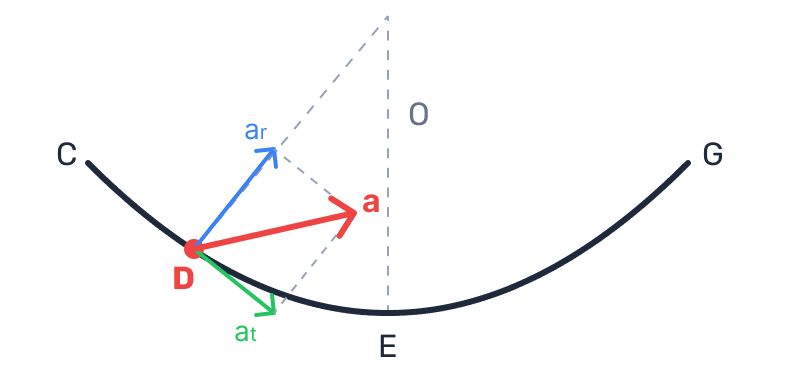
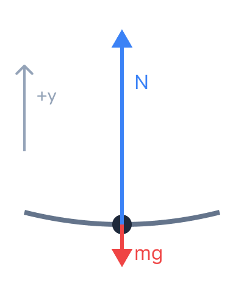

פתרון בגרות בפיזיקה: מכניקה 2018 שאלה 3
עודכן:
--- --:--:--

תמונת השאלה (question-image.png) לא נמצאה בתיקייה.
ברוכים הבאים לפתרון המלא והמוסבר לשאלה מתוך בגרות במכניקה. נעבור יחד צעד-אחר-צעד, נסביר כל שלב פיזיקלי, ונשתמש אך ורק בכלים המותרים מדף הנוסחאות. בהצלחה!
1
מה נתון:
הגולש נמצא בנקודה B, הממוקמת על הקשת המעגלית הראשונה (AC). מרכז הקשת המעגלית הזו נמצא מתחת למסלול (כפי שמסומן בקו המקווקו). קטע זה הינו ללא חיכוך. הכוחות הפועלים על הגולש הם כוח הכובד (כלפי מטה) והכוח הנורמלי מהמשטח.
2
מה מחפשים:
לזהות איזה מבין ארבעת האיורים (1, 2, 3 או 4) מייצג נכונה את כיווני וגודלי הכוחות בנקודה זו ולנמק.
3
נוסחאות ועקרונות בשימוש:
\[ \Sigma F_R = m \cdot a_R \] (החוק השני של ניוטון בציר הרדיאלי)
\[ a_R = \frac{v^2}{R} \] (תאוצה רדיאלית בתנועה מעגלית)
כוח הנורמל פועל תמיד במאונך למשטח ודוחף החוצה ממנו. בתנועה מעגלית, שקול הכוחות בציר הרדיאלי חייב להיות מכוון אל מרכז המעגל.
4
הצבה ופתרון:
ראשית, נבחן את כיוון הכוחות:
בנקודה B, המשיק למסלול משופע כלפי מטה וימינה. המשטח נמצא "מתחת" לגולש, ולכן הכוח הנורמלי חייב להיות מאונך למשיק ולהצביע למעלה וימינה. כוח הכובד מצביע תמיד אנכית מטה. גם איור 1 וגם איור 2 מציגים את הכיוונים הללו נכונה (איורים 3 ו-4 נפסלים).
שנית, נבחן את גודל הכוחות:
מרכז המעגל נמצא מתחת למסלול. נגדיר ציר רדיאלי החיובי לכיוון מרכז המעגל (למטה ושמאלה). הרכיב הרדיאלי של כוח הכובד הוא \( mg \cdot \cos\alpha \) (כאשר \( \alpha \) היא זווית השיפוע ביחס לאופק). משוואת הכוחות בציר הרדיאלי היא:
\[ mg \cos\alpha - N = m \frac{v^2}{R} \]
\[ N = mg \cos\alpha - m \frac{v^2}{R} \]
מכיוון ש- \( \cos\alpha \le 1 \) והביטוי \( m \frac{v^2}{R} \) חיובי, אנו מסיקים בהכרח כי: \( N < mg \cos\alpha < mg \).
כלומר, וקטור הכוח הנורמלי חייב להיות קצר יותר מווקטור כוח הכובד.
- באיור 2, מוצג \( N \) כגדול בהרבה מ-\( mg \). במצב כזה (הוא בטוח גדול מהרכיב הרדיאלי של \( mg \)), הכוח הרדיאלי השקול היה מצביע החוצה מהמעגל, והגולש היה מתנתק מהמסלול.
- באיור 1, הרכיב הרדיאלי של כוח הכובד גדול מהנורמל (וקטור \( N \) קצר מ-\( mg \)), מה שמבטיח שקול כוחות רדיאלי הפונה למרכז המעגל ושומר את הגולש על המסלול.
האיור המייצג נכון את הכוחות הוא איור מספר 1.
טיפ מורה: הבחנה מצוינת! הרבה תלמידים נופלים כאן ובוחנים רק את כיוון החצים. בתנועה עקומה (מעגלית), לגודל היחסי של החצים יש משמעות קריטית. אם אתם נמצאים על גבעה (מסלול קמור), אתם "ממריאים" ולכן המשטח מפעיל עליכם פחות כוח – ה-\( N \) קטן מ-\( mg \). לעומת זאת בואדי (מסלול קעור, כמו בסעיף ד'), אתם "נמעכים" אל המסלול ולכן ה-\( N \) גדול מ-\( mg \).
1
מה נתון:
נקודה D ממוקמת על הקטע המעגלי CG. מסופק לנו כי גם בקטע זה החיכוך ניתן להזנחה. המסלול בנקודה D משופע כלפי מטה.
2
מה מחפשים:
לקבוע האם יש לתאוצת הגולש רכיב משיקי (בכיוון התנועה) בנקודה D, ולנמק.
3
נוסחאות בשימוש:
\[ \Sigma F = m \cdot a \] (החוק השני של ניוטון)
לפי החוק השני של ניוטון, אם קיים שקול כוחות שאינו אפס בציר המשיקי, תהיה תאוצה בציר זה.
4
הצבה ופתרון:
הכוחות הפועלים על הגולש בנקודה D הם הכוח הנורמלי המאונך למסלול (שאין לו רכיב משיקי), וכוח הכובד המכוון אנכית מטה.
מכיוון שהמסלול בנקודה D מצוי בשיפוע, לכוח הכובד יש שני רכיבים: רכיב רדיאלי (המאונך למסלול) ורכיב משיקי (המקביל למסלול). מכיוון שאין כוח חיכוך שיאזן את הרכיב המשיקי של כוח הכובד, שקול הכוחות בציר המשיק אינו אפס.
כן, בנקודה D יש לתאוצת הגולש רכיב משיקי, הנובע מהרכיב המשיקי של כוח הכובד המאיץ אותו מטה לאורך המסלול.
טיפ מורה: תאוצה משיקית גורמת לשינוי בגודל המהירות של הגוף, ואילו תאוצה רדיאלית (צנטריפטלית) גורמת לשינוי בכיוון המהירות. הגולש מחליק מנקודה C ל-E ויורד בגובה, לכן ברור שגודל מהירותו הולך וגדל (האנרגיה הפוטנציאלית מומרת לקינטית). שינוי זה מעיד ישירות על קיום תאוצה משיקית!
1
מה נתון:
אנו נדרשים להעתיק את הקטע המעגלי CG ולשרטט חץ המתאר את כיוון התאוצה הכוללת של הגולש בנקודה D.
4
פתרון גרפי (תרשים):
התאוצה הכוללת מורכבת מחיבור וקטורי של התאוצה הרדיאלית \( \vec{a}_R \) (המכוונת למרכז המעגל, למעלה וימינה במקרה זה) והתאוצה המשיקית \( \vec{a}_T \) (המכוונת במורד המשיק למסלול, למטה וימינה). סכום הווקטורים ייתן וקטור שמכוון פנימה אל תוך הקשת, ונוטה קדימה עם כיוון התנועה.

תמונה לא נמצאה
החץ המייצג את התאוצה הכוללת (באדום) מצביע פנימה לעבר מרכז המסלול ונוטה קדימה ימינה (החיבור הווקטורי של הרכיב המשיקי והרדיאלי).
1
מה נתון:
- מסת הגולש: \( m = 80 \text{ kg} \).
- רדיוס הקשתות: \( R = 60 \text{ m} \).
- גובה הנקודה A: מתוך השרטוט ניתן לראות כי הגובה של נקודה A מהקרקע מסומן באות R, כלומר \( h_A = 60 \text{ m} \).
- גובה הנקודה E: \( h_1 = 32 \text{ m} \).
- הגולש מתחיל ממנוחה, כלומר מהירות התחלתית \( v_A = 0 \text{ m/s} \).
- אין חיכוך בקטע זה, ולכן אין עבודת כוחות לא משמרים (\( W_{nc} = 0 \)). מותר להניח ש- \( g = 10 \text{ m/s}^2 \).
2
מה מחפשים:
את גודל המהירות של הגולש כאשר הוא חולף בנקודה הנמוכה ביותר E, כלומר \( v_E \).
3
נוסחאות בשימוש:
\[ W_{nc} = \Delta E_k + \Delta U_G \] (משפט עבודה-אנרגיה, ומכיוון שאין עבודת כוחות לא משמרים, מתקיים חוק שימור אנרגיה מכנית: \( E_A = E_E \))
\[ U_G = m \cdot g \cdot h \] (אנרגיה פוטנציאלית כובדית)
\[ E_k = \frac{1}{2} \cdot m \cdot v^2 \] (אנרגיה קינטית)
4
הצבה ופתרון:
נשווה את האנרגיה המכנית הכוללת בנקודה A לאנרגיה בנקודה E:
\[ E_A = E_E \]
\[ m \cdot g \cdot h_A + \frac{1}{2} \cdot m \cdot v_A^2 = m \cdot g \cdot h_1 + \frac{1}{2} \cdot m \cdot v_E^2 \]
נציב את הנתונים הידועים. המהירות ההתחלתית היא אפס ולכן האנרגיה הקינטית ב-A מתאפסת. כמו כן, נחלק את שני אגפי המשוואה במסה \( m \) (שהיא גודל חיובי משותף):
\[ g \cdot h_A = g \cdot h_1 + \frac{1}{2} \cdot v_E^2 \]
\[ 10 \cdot 60 = 10 \cdot 32 + \frac{1}{2} \cdot v_E^2 \]
\[ 600 = 320 + \frac{1}{2} \cdot v_E^2 \]
\[ 280 = \frac{1}{2} \cdot v_E^2 \]
נכפול ב-2 ונוציא שורש:
\[ v_E^2 = 560 \]
\[ v_E = \sqrt{560} \approx 23.66 \text{ m/s} \]
גודל המהירות של הגולש בנקודה E הוא: \( v_E \approx 23.66 \text{ m/s} \)
טיפ מורה: שימו לב לעוצמה של שימור אנרגיה! לא היינו צריכים להתחשב בצורה המדויקת של המסלול העקום, מכיוון שכוח הכובד הוא כוח משמר והעבודה שלו תלויה אך ורק בהפרש הגבהים התחלתי וסופי.
1
מה נתון:
אנו נמצאים בנקודה E, שהיא הנקודה הנמוכה ביותר בקשת המעגלית. בנקודה זו מהירות הגולש בריבוע היא \( v_E^2 = 560 \text{ m}^2/\text{s}^2 \) (כפי שחישבנו בסעיף הקודם). רדיוס העקמומיות הוא \( R = 60 \text{ m} \).
2
מה מחפשים:
את גודל וכיוון הכוח שהגולש מפעיל על המסלול. לפי החוק השלישי של ניוטון, כוח זה שווה בגודלו והפוך בכיוונו לכוח הנורמלי (\( N \)) שהמסלול מפעיל על הגולש.
3
נוסחאות ועקרונות בשימוש:
\[ \Sigma F = m \cdot a_R \] (החוק השני של ניוטון בציר הרדיאלי)
\[ a_R = \frac{v^2}{R} \] (תאוצה רדיאלית בתנועה מעגלית)
החוק השלישי של ניוטון (חוק פעולה ותגובה): כאשר גוף אחד מפעיל כוח על גוף שני, הגוף השני מפעיל על הגוף הראשון כוח השווה לו בגודלו ומנוגד לו בכיוונו (\( \vec{F}_{12} = -\vec{F}_{21} \)). אנו נשתמש בעקרון זה כדי למצוא את הכוח שהגולש מפעיל על המסלול מתוך חישוב הכוח הנורמלי שהמסלול מפעיל על הגולש.
4
הצבה ופתרון:
בנקודה E (הנקודה הנמוכה במסלול), מרכז המעגל נמצא בדיוק מעל הגולש. נבחר ציר אנכי חיובי כלפי מעלה (לכיוון מרכז המעגל). הכוחות הפועלים על הגולש הם: הכוח הנורמלי \( N \) (כלפי מעלה) וכוח הכובד \( mg \) (כלפי מטה).

תמונה לא נמצאה
נרשום את משוואת הכוחות (החוק השני של ניוטון):
\[ \Sigma F_y = m \cdot a_R \]
\[ N - m \cdot g = m \cdot \frac{v_E^2}{R} \]
נבודד את הכוח הנורמלי N ונציב את הנתונים:
\[ N = m \cdot g + m \cdot \frac{v_E^2}{R} \]
\[ N = 80 \cdot 10 + 80 \cdot \frac{560}{60} \]
\[ N = 800 + 80 \cdot \frac{56}{6} = 800 + 80 \cdot \frac{28}{3} \]
\[ N = 800 + \frac{2240}{3} = 800 + 746.67 \approx 1546.67 \text{ N} \]
לפי החוק השלישי של ניוטון (חוק פעולה ותגובה), המסלול מפעיל על הגולש כוח נורמלי N כלפי מעלה. הגולש, מצידו, מפעיל על המסלול כוח השווה בגודלו ומנוגד בכיוונו (כלומר, כלפי מטה).
הכוח שהגולש מפעיל על המסלול בנקודה E הוא בגודל \( 1546.67 \text{ N} \), וכיוונו כלפי מטה.
טיפ מורה: שאלה זו מדגימה מדוע אנו מרגישים "כבדים יותר" בתחתית של לופ ברכבת הרים או בנדנדה. המסלול צריך לספק לא רק כוח שיאזן את כוח הכובד שלנו, אלא תוספת כוח (המהווה את הכוח הצנטריפטלי) שתפקידה לעקם את המסלול שלנו כלפי מעלה. לכן \( N > mg \) בנקודה זו. שימו לב שענינו על "הכוח שהגולש מפעיל על המסלול" ולכן הקפדנו לציין שכיוונו כלפי מטה!
1
מה נתון ושלב 0 (המרת יחידות):
- הגובה של נקודה L מהקרקע: \( h_2 = 36 \text{ m} \).
- עבודת כוח החיכוך (מרגע תחילתו בנקודה G ועד העצירה): \( 20 \text{ kJ} \).
המרת יחידות (MKS):
קילו-ג'אול (kJ) אינה יחידה תקנית, נמיר לג'אול. העבודה של כוח חיכוך קינטי מנוגדת לכיוון התנועה, לכן היא שלילית בחישובי האנרגיה:
\( W_f = -20 \text{ kJ} = -20,000 \text{ J} \).
2
מה מחפשים:
אנו צריכים לקבוע האם הגולש מגיע אל הנקודה L או נעצר לפניה, ולהוכיח זאת בחישוב.
3
נוסחאות בשימוש:
\[ W_{nc} = E_{final} - E_{initial} \] (משפט עבודה ואנרגיה כוללת)
4
הצבה ופתרון:
ראשית, נחשב את האנרגיה המכנית ההתחלתית של המערכת בנקודה A:
\[ E_A = m \cdot g \cdot h_A + \frac{1}{2} \cdot m \cdot v_A^2 \]
\[ E_A = 80 \cdot 10 \cdot 60 + 0 = 48,000 \text{ J} \]
מכיוון שאין חיכוך מנקודה A ועד לנקודה G, האנרגיה המכנית נשמרת עד לנקודה זו. כשהגולש ממשיך מנקודה G ועד שהוא נעצר (נסמן נקודה זו ב-S, מלשון Stop), כוח החיכוך מבצע עבודה של \( -20,000 \text{ J} \). נחשב את האנרגיה בנקודת העצירה S:
\[ W_f = E_S - E_A \]
\[ -20,000 = E_S - 48,000 \]
\[ E_S = 48,000 - 20,000 = 28,000 \text{ J} \]
בנקודת העצירה המהירות היא אפס, ולכן כל האנרגיה המכנית היא אנרגיה פוטנציאלית כובדית. נמצא את הגובה המקסימלי שהגולש יגיע אליו (\( h_S \)):
\[ E_S = m \cdot g \cdot h_S \]
\[ 28,000 = 80 \cdot 10 \cdot h_S \]
\[ 28,000 = 800 \cdot h_S \]
\[ h_S = \frac{28,000}{800} = 35 \text{ m} \]
חישבנו כי הגולש נעצר לחלוטין כאשר הוא מגיע לגובה של 35 מטרים. היות ונקודה L נמצאת בגובה \( h_2 = 36 \text{ m} \), ברור שהגולש יאבד את כל האנרגיה הקינטית שלו לפני שיצליח לטפס לגובה הנדרש.
הגולש אינו מגיע לנקודה L. הוא נעצר בגובה 35 מטר, המהווה גובה נמוך מזה של נקודה L (שהוא 36 מטר).
טיפ מורה: תמיד זכרו שכוח החיכוך הקינטי גורם ל"אובדן" אנרגיה מכנית (היא מומרת לאנרגיית חום). לכן עבודתו תמיד שלילית. אם הגולש היה צריך להגיע בדיוק לנקודה L ולעצור שם, הוא היה זקוק לאנרגיה של \( 80 \cdot 10 \cdot 36 = 28,800 \text{ J} \). היות ונותרו לו רק \( 28,000 \text{ J} \), הוא לא יכול להגיע לשם!